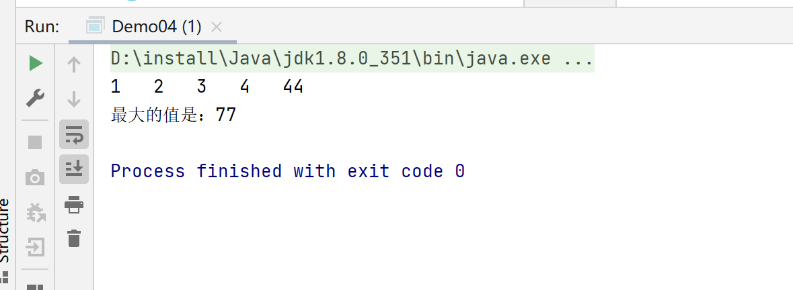

Java-方法
什么是方法
Java方法是语句的集合，它们在一起执行一个功能。
- 方法是解决一类问题的步骤的有序组合
- 方法包含于类或对象中
- 方法在程序中被创建，在其他地方被引用
设计方法的原则
方法的本意是功能块，就是实现某个功能的语句块的集合。我们设计方法的时候，最好保持方法的原子性，就是一个方法只完成1个功能，这样利于我们后期的扩展。
方法的命名规则
驼峰命名规则，首字母小写
1 | public class Demo01 { |
方法的定义
Java的方法类似于其它语言的函数，是一段用来完成特定功能的代码片段，一般情况下，定义个方法包含以下语法:
方法包含一个方法头和一个方法体，下面是一个方法的所有部分：
- 修饰符：修饰符，这是可选的，告诉编译器如何调用该方法。定义了该方法的访问类型。
- 返回值类型：方法可能会返回值。returnValueType 是方法返回值的数据类型。有些方法执行所需的操作，但没有返回值。在这种情况下，returnValueType 是关键字void。
- 方法名：是方法的实际名称。方法名和参数表共同构成方法签名。
- 参数类型：参数是一个占位符。当方法被调用的时候，传递给参数。这个值被称为实参或变量。参数列表是指方法的参数类型、顺序和参数的个数。参数是可选的，方法可以不包含任何参数。
- 形式参数：在方法被调用时用于接收外界输入的数据
- 实参：调用方法时实际传给方法的数据
- 方法体：方法体包含具体的语句，定义该方法的功能。
格式
1 | 修饰符 返回值类型 方法名(参数类型 参数名){ |
1 | public class Demo01 { |
1 | public class Demo02 { |
方法的调用
调用方法：对象.方法名(实参列表)
Java支持两种调用方法的方式，根据方法是否返回值来选择
- 当方法返回一个值的时候，方法调用通常被当做一个值
1 | int larger = max(2,3); |
- 当方法返回值是void，方法调用是一条语句
1 | System.out.println(); |
方法的重载
重载就是在一个类中，有相同的函数名称，但形参不同的函数。
方法的重载的规则
- 方法名称必须相同
- 参数列表必须不同(个数不同、或类型不同、参数排列顺序不同等)
- 方法的返回类型可以相同也可以不相同
- 仅仅返回类型不同不足以成为方法的重载
实现理论
方法名称相同时，编译器会根据调用方法的参数个数、参数类型等去逐个匹配，以选择对应的方法，如果匹配失败，则编译器报错。
命令行传参
有时候希望运行一个程序的时候再传递给它消息，这要靠命令行参数给main()函数实现。
1 | public class Demo03 { |
可变参数（不定项参数）
- JDK1.5开始，Java支持传递同类型的可变参数给一个方法
- 在方法声明中，在指定参数类型后加一个省略号（…）
- 一个方法中只能指定一个可变参数，它必须是方法的最后一个参数。任何普通的参数必须在它之前声明。
1 | public class Demo04 { |

递归
通常，A方法调用B方法
递归：A方法调用A方法，就是自己调用自己。
递归结构包括两个部分：
- 递归头：什么时候不调用自身方法。如果没有头，将陷入死循环。
- 递归体：什么时候需要调用自身方法
1 | public class Demo05 { |